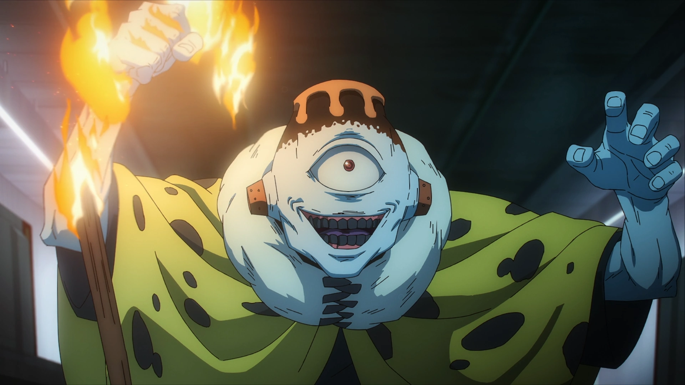
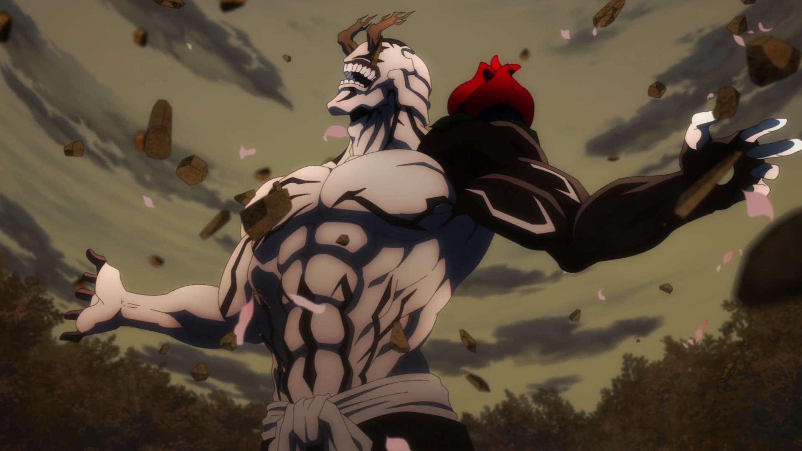
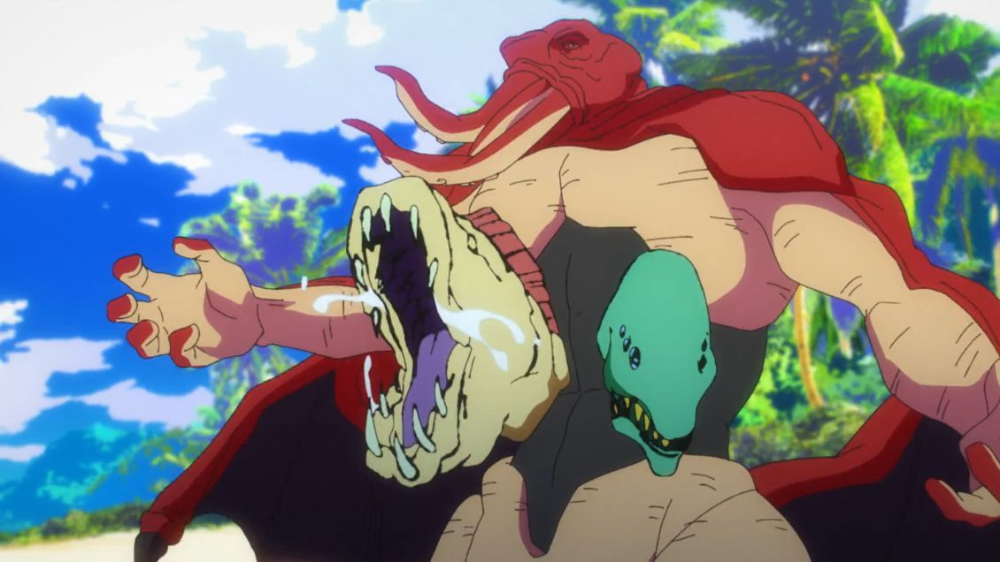
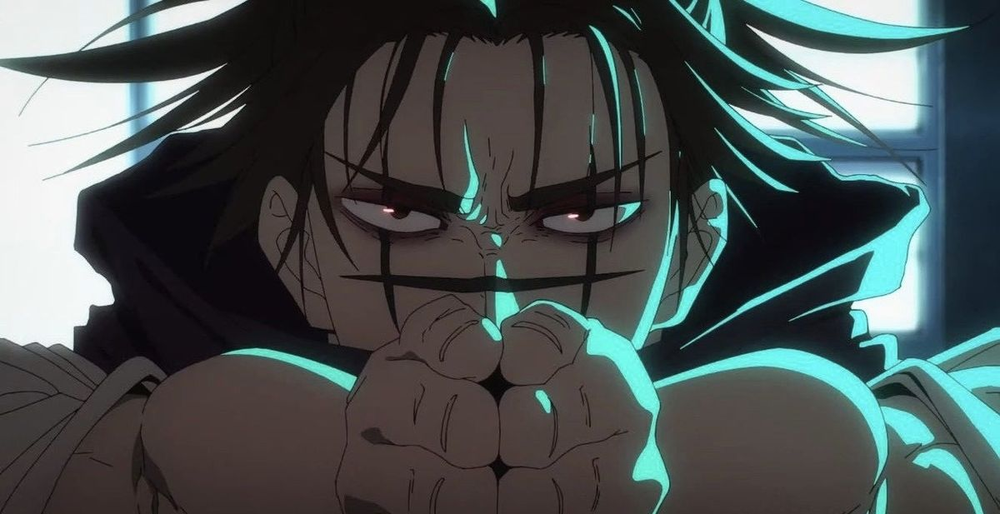
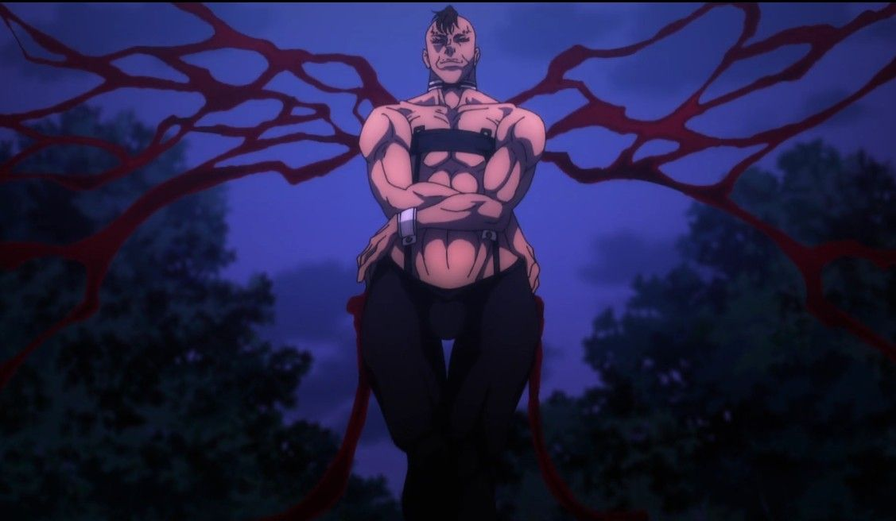
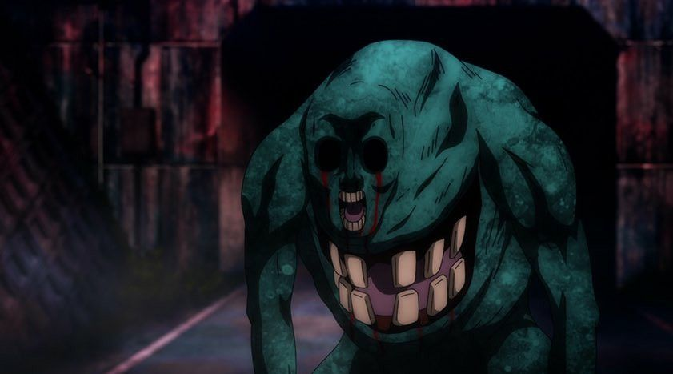

Ryomen Sukuna
The King of Curses — extremely dangerous and linked to Yuji.

Role: The supreme King of Curses, an ancient and overwhelmingly powerful cursed being whose existence shapes the balance of power between sorcerers and curses.

Role: A special grade cursed spirit who embodies humanity’s fear of themselves, acting as a key manipulator and threat due to his ability to reshape souls.

Role: The mastermind curse user leader whose extremist ideology drives him to gather cursed spirits and push the world toward a sorcerer-dominated society.

Role: A special grade cursed spirit born from humanity’s terror of the ocean, eventually maturing into a fully evolved curse capable of generating devastating domain techniques.

Role: A Death Painting Womb who serves as a frontline fighter and elder brother figure, carrying out missions alongside his siblings with unwavering commitment.
//Naobito Zenin-3.png)
Role: The authoritative head of the Zenin Clan, whose mastery of Projection Sorcery and unwavering adherence to tradition define his leadership and influence in the jujutsu world.
/Toji Fushiguro-3.png)
Role: The infamous Sorcerer Killer, a non-sorcerer assassin who relies solely on exceptional physical ability and cursed tools to execute high-level jujutsu targets.
The King of Curses — extremely dangerous and linked to Yuji.

A curse who manipulates souls; one of the more sinister foes.

Former ally turned antagonist with extreme beliefs about curses.

Cursed spirit with volcano abilities, member of the higher-rank curses.

Cursed spirit obsessed with protecting nature and punishing humans.

Powerful curse controlling water and aquatic monsters.

Initially an antagonist, one of the Cursed Womb: Death Paintings.

One of the Cursed Womb: Death Paintings, initially fights sorcerers.

Partner of Eso, part of the Cursed Womb siblings, fights sorcerers.
/Naobito Zenin-0.jpg)
Technically a minor antagonist as part of the Zenin clan, appears briefly.
/Toji Fushiguro-0.jpg)
Flashback character; extremely skilled sorcerer killer relevant to S1 & S2.